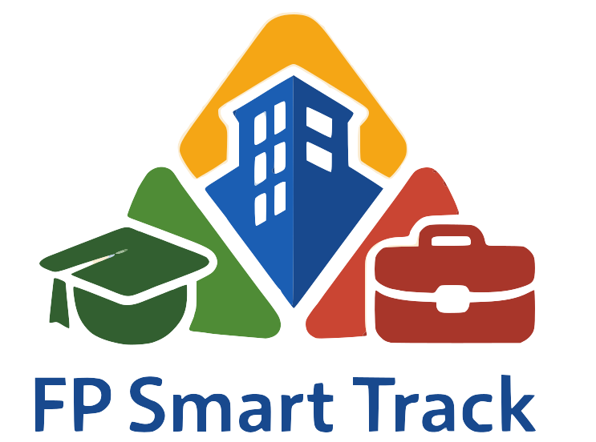

Búsqueda instantánea
Evite largas búsquedas. Envíe solicitudes verificadas directamente a la plataforma de contratación con un solo clic.

Gestión_de_las_prácticas_en_FP
La plataforma inteligente para una FP conectada a la empresa.
Gestión de prácticas sin papeles, sin
estrés, sin pérdidas de tiempo.
CIFRAS_HOY
98 % ESTUDIANTES CONTRATADOS
domain 256empresas activas
groups 900+estudiantes empleados
work 300+ofertas de prácticas
school 26centros educativos participantes
Datos no estructurados,
Resultados reales.

Evite largas búsquedas. Envíe solicitudes verificadas directamente a la plataforma de contratación con un solo clic.
Canales de mensajería encriptados, abiertos directamente entre candidatos y reclutadores.
Accede a métricas detalladas sobre el rendimiento de las prácticas, la tasa de contratación y el impacto en la formación profesional.
Estado de las prácticas: activas
Comienza tu nueva etapa profesional. Únete a FP Smart Track hoy.